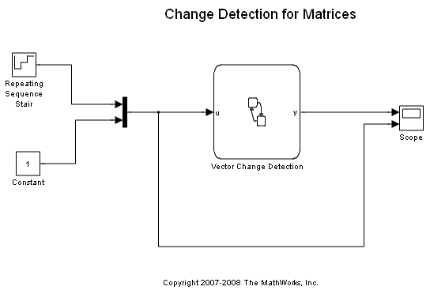
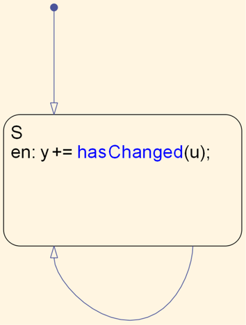

行列の変更を検出
変更の検出では、直前のタイム ステップ以降に、チャートの入力、出力、またはローカル変数が値が変更したかどうかを Stateflow® チャートの条件で問い合わせることができます。このデモでは、ベクトルおよび行列に適用可能なこの機能の適用方法の例を説明します。
ベクトルは、Vector Change Detection という名前の Stateflow チャートに入力として送られます。このベクトルの最初の要素は、Repeating Sequence Generator の出力です。つまり、このベクトルの最初の要素は常に変化しています。Vector Change Detection チャートをダブル クリックすると、入力ベクトル u が変化するたびに、出力 y が必ず増加していることが示されます。hasChanged がベクトル u 全体に適用されていることに注意してください。ベクトル u の要素における変化によって、この演算子は値 1 を返します。シミュレーションを実行し、スコープの値を観察してください。
 